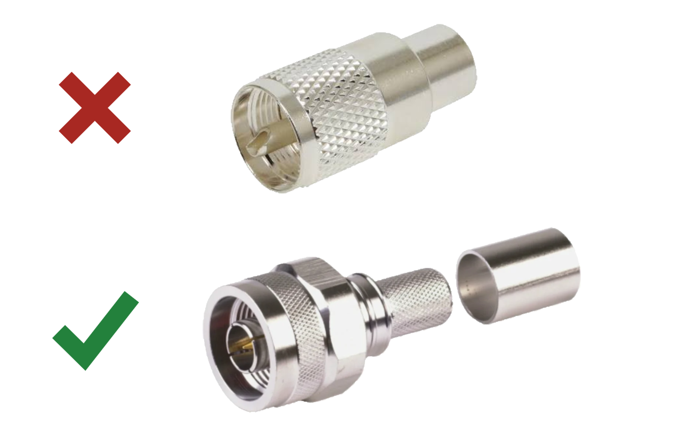

Articles Feed line
Opinion
Your $4,000 radio ships
with a 1930s connector
Amphenol's own part numbers call the PL-259 non-constant impedance. It is still bolted to the back of nearly every radio sold today. It is time that changed.
Amateur radio has always been a mix of tradition and innovation. We restore old radios, and we also run software-defined receivers, digital modes, computer-controlled stations and satellite work on equipment that would have seemed impossible a few decades ago.
With all of that, it is strange that one of the most important connections in the station is still based on a connector developed nearly a century ago. I am talking about the PL-259 plug and SO-239 socket, commonly called the UHF connector.
The PL-259 has served amateur radio for a very long time. Nobody can argue with that. But something continuing to work does not mean it remains the best choice for new equipment. It is time for radio manufacturers and amateur operators to begin moving away from it.
Amphenol says it clearly
This is not one operator's opinion. Amphenol RF, one of the largest
and most respected manufacturers of RF connectors in the world,
describes its UHF series as robust, low-frequency interconnects
designed for applications where reliable performance is essential but
precision electrical performance is not a primary concern
.
Look at how Amphenol names the parts themselves. The catalogue
listing for its standard PL-259 solder plug, part 083-1SP, reads
UHF Straight Solder Plug RG-8 RG-213 RG-225 Non-Constant Impedance
PL-259
. The manufacturer put the words non-constant
impedance in the product title. Compare that with the Type N
listings, where the impedance appears in the title as
50 Ohm
.
Think about that for a moment. We buy modern radios designed around a 50-ohm system. They contain digital signal processing, precision filters, spectrum displays, automatic antenna tuners, computer interfaces and highly advanced receiver technology. Then, at the point where the RF signal actually enters or leaves the radio, the manufacturer installs a connector that its own maker declines to assign an impedance to.
That should not be acceptable as the permanent standard for amateur radio.
The name is a historical holdover
The name UHF connector makes the PL-259 sound far more capable than it is. When the connector was developed, frequencies above 30 MHz were considered extremely high. The name made sense then. RF technology moved on. The name stayed.
The connector was never designed to hold a precise 50 ohms through the mating interface. Its internal dimensions change where the plug and socket come together, and that creates an impedance discontinuity.
On the lower HF bands the effect is usually small enough that the average operator never notices, which is the main reason the connector has survived so long. It works well enough in many HF installations. The problem grows with frequency. A connector on a radio covering HF, 6 meters and 2 meters should not get worse as the operator tunes higher. Good enough on HF is not a standard for new equipment.
We already have a better connector
For most full-power amateur equipment, the logical replacement is the
50-ohm Type N. It is not new or experimental. It has been used for
decades in military, commercial, broadcast, cellular, radar,
satellite, test equipment and outdoor antenna systems. Amphenol
describes the series as rugged, weatherproof, medium-size RF
interconnects designed for performance and durability in demanding
environments
.
Amphenol publishes real numbers for it. The Type N series datasheet gives 50 ohms nominal, a frequency range of DC to 18 GHz, a working voltage of 500 volts RMS maximum continuous, dielectric withstanding voltage of 1500 volts RMS, insulation resistance of 5000 megohms minimum, and contact resistance figures down to the milliohm for both the centre and outer contacts. Those are specifications an engineer can design against and a technician can test.
| Characteristic | UHF, PL-259 and SO-239 | Type N |
|---|---|---|
| Nominal impedance | Non-constant, per Amphenol's own part titles | 50 ohms |
| Frequency range | Commonly worked to about 300 MHz | DC to 18 GHz |
| Working voltage | Varies by part | 500 V RMS max continuous |
| Intended use | Low frequency, where precision electrical performance is not a primary concern | Precision RF, outdoor, industrial and military systems |
| Environmental protection | Not inherently sealed | IP67-rated versions catalogued, sealed at the interface |
| Published RF performance | Limited | Defined VSWR, insertion loss, RF leakage and contact resistance |
| Professional use | General communications and legacy equipment | Antennas, base stations, radar, satellite, instrumentation |
Figures for Type N come from Amphenol's published series datasheet. The UHF entries come from Amphenol's series description and part titles. Ratings vary by individual part number, cable and installation, so check the datasheet for whatever you actually buy.
Better electrical performance
A coaxial feed line is supposed to give a continuous 50-ohm path between the radio and the antenna system. Every connector in that path should hold that impedance as closely as it can. Type N was designed to do exactly that. The PL-259 was not.
Type N offers a defined 50-ohm impedance, lower and more predictable return loss, better shielding, lower RF leakage, more consistent performance from one connector to the next, reliable operation across HF through microwave, and published specifications that can be tested and verified.
Will swapping a properly installed PL-259 for a Type N suddenly add several S-units to an HF signal? No, and we should not make claims like that. The real issue is engineering quality and consistency. If we are building equipment around a 50-ohm standard, the connector should be a real 50-ohm connector.
Better weather protection
Anyone who has maintained an outdoor antenna system knows what moisture does. The threads on a PL-259 hold the connector together, but they do not make a dependable environmental seal. Water gets in around the threads, the centre contact, the rear of the connector or the cable jacket unless the whole thing is carefully wrapped.
Type N does not depend on tape to stay dry. Amphenol catalogues
IP67-rated Type N assemblies by part number, sealing built into the
interface rather than added afterwards. Part 095-909-173M200 is listed
as N-Type Straight Plug IP67 to N-Type Straight Plug IP67 LMR-400
50 Ohm
. IP67 means dust tight and able to survive immersion in a
metre of water for half an hour. There is no PL-259 with that rating,
because the interface was never designed to have one.
The compression connectors go further still. RF Industries markets
its Comp Pro line as giving a complete water-tight connection with
an installation time of less than one minute
, calls it the
preferred field-installable connector for LMR-400 and LMR-600, and
says the connectors perform flawlessly in all conditions and excel
in harsh environments
. The seal is the connector's job, by design,
not a layer of self-amalgamating tape and a prayer.
This is not theoretical for me. I have spent years maintaining professional outdoor antenna systems where the runs terminating at the antennas are built on sealed connectors of this type, left exposed to the weather with no wrap of tape on them, and they hold. The seal comes from the connector. That is the standard the professional world already works to.
None of this is an argument for carelessness. Plenty of good installers still tape a sealed connection as a second line of defence, and there is nothing wrong with that. The point is which end you start from. With a sealed Type N or a compression connector, weatherproofing is redundancy. With a PL-259, it is the only thing standing between the feed line and the weather.
For a connector routinely used at outdoor antennas, lightning arrestors, remote switches and tower-mounted equipment, weather resistance should be part of the original design. On the PL-259 it never was, and no amount of tape turns it into a sealed connector.
Better construction, more consistent installation
A PL-259 can be installed correctly, but the process leaves plenty of room for mistakes. Depending on the connector and cable you may have to solder the centre conductor, solder the shield through holes in the body, use a reducer, or thread the body directly over the jacket and shield. Too much heat damages the dielectric. Too little makes a cold joint. Poor shield preparation leaves loose strands inside the body. Cheap versions use weak plating, poor insulators and loose-fitting parts.
Type N connectors come with crimp, clamp, compression and solder terminations made for specific cable sizes. The centre contact, shield connection, dielectric, gasket and strain relief are designed to work together. A properly selected and installed Type N gives you more repeatable cable preparation, better shield termination, better strain relief, better support for the centre conductor, more resistance to vibration and better protection of the mating surfaces.
The connector at the top of this page is one of them. Times
Microwave's EZ-400-NMH-X is an N male for LMR-400 built with, in the
maker's words, crimp-style outer contacts and spring finger inner
contacts
, so there is no soldering at all, and a no-braid trim
design, eliminating FOD and guaranteeing an optimal and consistent
termination
. Times Microwave calls the result durable and
weatherproof. That is a connector engineered so an average installer
gets the same result as a good one.
Connector quality still matters. A badly made Type N can fail, and a well-made PL-259 can give years of service. The difference is where each one starts.
Power handling is not a good reason to keep it
One argument for the PL-259 is that its large centre pin must make it better for high power. Power handling is more complicated than pin size. It depends on contact resistance, dielectric material, connector temperature, frequency, altitude, cable size, installation quality, voltage and the impedance match of the whole system.
A quality PL-259 will handle legal-limit power under normal HF conditions. So will a properly selected Type N. The advantage of Type N is not that every one of them beats every PL-259 on power. It is that Type N combines adequate power handling with controlled impedance, weather-resistant construction, low contact resistance, predictable RF performance and a far wider usable frequency range.
Where extremely high power is required, professional installations move up to larger interfaces such as 7/16 DIN. They do not go back to the PL-259 as the best modern engineering answer.
What is really keeping it alive
The PL-259 remains common largely because it is already common. Manufacturers keep fitting SO-239 sockets because operators already own PL-259 cables. Operators keep buying PL-259 cables because new radios still come with SO-239 sockets. Accessory makers follow the radio makers, and round it goes.
That is market inertia, not evidence of technical superiority.
Manufacturers also save a few dollars per unit on a simple connector with an established supply chain. On a radio costing hundreds or thousands of dollars, that should not be the deciding factor. We spend freely on low-loss coax, quality antennas, lightning protection, tuners, amplifiers, filters and test gear. Saving a few dollars on the connector carrying RF between all of it makes very little sense.
Adapters should be transitional
Adapters would make the change manageable, but they should not become the permanent answer. Every adapter is another mechanical joint, another path for moisture and another possible impedance discontinuity. The goal is fewer unnecessary connections, not an adapter stack behind every radio.
Nobody needs to convert a whole station overnight. A reasonable transition looks like this:
- Manufacturers begin fitting Type N female connectors on newly designed HF, VHF, UHF and multiband radios.
- Manufacturers offer Type N as a factory option on existing equipment.
- New amplifiers, tuners, switches, meters, dummy loads and commercial antennas start using Type N.
- Amateur radio organisations and technical publications recommend Type N for new station construction.
- Operators replace cables and accessories as older equipment retires.
- Adapters stay available for legacy radios and accessories.
Existing radios can keep their SO-239 connectors for as long as their owners want them. This is about the standard for new equipment, not about making old equipment unusable.
Manufacturers need to take the first step
Most of this change has to come from the radio manufacturers. Modern radios contain direct-sampling receivers, digital predistortion, advanced filtering, touchscreens, USB ports, network connections, GPS receivers and sophisticated software. Putting an SO-239 on the back of that does not match the engineering inside it.
Manufacturers should stop treating the SO-239 as the automatic choice for HF equipment. At minimum, buyers should be offered a Type N option. On new designs, Type N should be the standard.
Operators have to ask for it too. Equipment reviews should name an SO-239 as a design weakness rather than passing over it without comment. Manufacturers respond to what customers request. If we keep treating the PL-259 as untouchable, nothing changes.
Respect the past without being trapped by it
The PL-259 has had a long and useful life. It connected generations of amateur stations, military radios, public-safety systems and commercial communications equipment. That history deserves respect.
Respecting a connector's history does not mean putting it on every new radio forever. For new, full-size 50-ohm amateur equipment, Type N should become the standard. BNC, TNC, SMA and others can go on serving equipment where quick connection, lower power or smaller size suits them better.
The PL-259 still has a place in restoration projects, legacy stations and the adapter drawer. What it should no longer do is define the future of amateur radio.
We have better choices. The professional RF industry has been using them for decades. It is time for amateur radio to catch up.
References
- Amphenol RF, UHF Connectors series page. Amphenol describes the series as robust, low-frequency interconnects for applications where precision electrical performance is not a primary concern. amphenolrf.com
- Amphenol RF, part 083-1SP, listed as
UHF Straight Solder Plug RG-8 RG-213 RG-225 Non-Constant Impedance PL-259
. amphenolrf.com - Amphenol RF, N-Type Connectors series page, describing the family as rugged, weatherproof, medium-size RF interconnects for performance and durability in demanding environments. amphenolrf.com
- Amphenol RF, N-Type Connector Series Datasheet. Source of the 50-ohm impedance, DC to 18 GHz range, 500 V RMS working voltage, 1500 V RMS dielectric withstanding voltage, 5000 megohm insulation resistance and contact resistance figures quoted above. amphenolrf.com (PDF)
- Amphenol RF, part 095-909-173M200, listed as
N-Type Straight Plug IP67 to N-Type Straight Plug IP67 LMR-400 50 Ohm 2 M ARC
. Source of the IP67 rating on LMR-400. amphenolrf.com - RF Industries, Comp Pro RF Connectors. Source of the water-tight connection, sub-one-minute install and harsh environment claims for LMR-400 and LMR-600. rfindustries.com
- Times Microwave Systems, EZ-400-NMH-X. Source of the crimp-style outer contact, spring finger inner contact, no-braid trim and weatherproof descriptions, and the connector pictured above. timesmicrowave.com